Understanding Blockchain for IT Pros
Monday, June 25, 2018
IT professionals are often asked to describe technologies to others within their organization, and this includes buzz words they may have heard in some tech article or trade magazine:
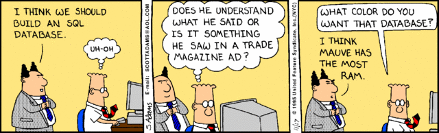
There’s definitely no shortage of these buzz words in the tech industry - “the cloud,” “the Web 2.0,” “XaaS,” “CyberSecurity,” and of course “bitcoin” and “blockchain” are layered as thick as possible within articles and blogs to bolster clicks, likes and shares.
Today I gave a presentation at WWITPRO entitled “Blockchain for IT Pros” aimed to demystify blockchain and bitcoin from a tech point-of-view, and touch upon the key features that can be communicated to other (non-technical) people. Even my own organization asked me why we don’t teach blockchain in our college IT programs ;-)
This blog post summarizes many of the same points I made in my presentation, and in the same bulleted fashion to make it easier to navigate:
What is blockchain?
-
•Blockchain is a database (ledger) of information (transactions) that is cooperatively updated by computers (nodes) across the Internet with NO central control.
-
•Each node involved in a blockchain maintains an entire copy of the ledger.
-
•The ledger is separated into groups of transactions that *roughly* happened at the same point in time called blocks.
-
•These blocks are then placed in order, and this is called the blockchain.
Blockchain and bitcoin:
-
•Cryptocurrencies (such as bitcoin) are the ONLY use case for blockchain widely implemented today. The idea of blockchain isn’t new (1991), and you can think of bitcoin as the first test platform for blockchain (the future of cryptocurrency is somewhat bleak, but it serves as a good stepping-stone to other use cases for blockchain). All blockchain startups today focus on cryptocurrency as a starting point, and what they produce is still proof-of-concept at this time.
-
•The hard reality is that both bitcoin and blockchain are massive buzz words today, and any buzz word that is viewed as “being the next big thing” attracts venture capital and big names. Consequently, every large tech company has a pet blockchain project, or has purchased a blockchain startup in order to look trendy. *Spoiler alert* Blockchain isn’t going to take over the world, but it does have some potential uses in the distant future for certain kinds of data.
-
•The big players in the blockchain space trying to legitimize multi-purpose blockchain for future use include the Linux Foundation’s Hyperledger Fabric framework, and IBM (who is currently spending the most $$ on blockchain research and development).
-
•The easiest way to see how blockchain works under the hood is to look at bitcoin. Afterwards, we’ll circle back and talk about blockchain properly (with context).
Everything relies on cryptography (crypto):
-
•You are probably familiar with symmetric crypto, where we encrypt data (plaintext) using a symmetric algorithm and a random component (key) to generate encrypted results (ciphertext). The reason that it’s called symmetric crypto is because the symmetric algorithm is mathematically reversible - to decrypt ciphertext, you simply run it through the algorithm in reverse with the same key!
-
•Unfortunately, symmetric encryption doesn’t work well across a network since both parties that want to exchange encrypted information must have the same key beforehand. That’s where asymmetric encryption comes in handy.
-
•With asymmetric encryption, there are two keys: a public key (which is freely given out to anyone), and a private key (which is not given out to anyone). To send an encrypted message to someone, you simply obtain their public key from across the network and use it alongside an asymmetric algorithm (which is non-reversible) to encrypt some plaintext. Then you send the encrypted ciphertext back across the network to the recipient, where they decrypt it using the associated private key.
-
•To ensure you know that data has not been modified in transit, you can also use a hash (also called a checksum). If you take a hash of data, you get a random string of data based on that data - if you change a single bit of that data, and take another hash, it will be radically (randomly) different.
-
•Hashes of data that you send across a network are often encrypted with your private key asymmetrically (which creates a digital signature). If you send someone some data across a network alongside a digital signature of that data, they can use your public key to decrypt the digital signature and obtain the hash inside. They can then compare that hash value to a hash they take of the data they received from you in order to prove that it hasn’t been modified, as well as prove that it must have come from you (since you are the only one with the private key that could create the digital signature!).
-
•All of this is summarized below:

Review of basic blockchain/bitcoin principles:
-
•Every transaction must be asymmetrically encrypted
-
•Hashes protect the integrity of transactions
-
•Transactions must be communicated to all computers across the Internet
-
•Security measures must be present in the system to prevent misuse
-
•For every transaction, every computer in the blockchain must be involved (CPU-intensive)
So, how does cryptocurrency (e.g. bitcoin) work under the hood?
-
•Each user creates a public/private key pair in their Bitcoin Wallet software & downloads the entire existing blockchain (ledger)
-
•Your public key (PubK) = your account #
-
•Here’s an example of a basic transaction in the ledger where Larry sends Curly 2.0 bitcoins (BTC):
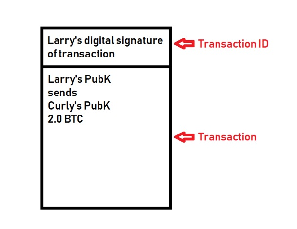
Since this is a decentralized system, account balances are not stored. Larry must prove that he received >2.0 BTC by referencing other transactions (inputs) before sending money to others (outputs). Each input must be used up entirely, so any remainder must be paid back to Larry (in this case, he had to pay the 0.5 BTC remainder to himself):
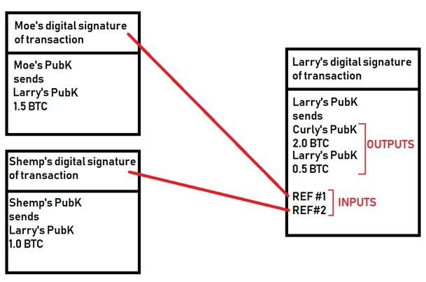
Important notes about transactions at this stage:
-
•The ledger only stores information about how bitcoin ownership changes over time -balances are NOT stored, and all transactions are dependent on previous ones.
-
•Because it’s decentralized, there’s no trust.
-
•Each node much check/validate all previous transaction inputs before the transaction is trusted by the node. In other words, each node must validate the entire transaction chain all the way back to the first Bitcoin transaction (caching helps this).
-
•To ensure NO double spending, nodes must also check ALL other transactions to ensure that the inputs have not already been used in a different transaction (recent transaction indexes help this).
-
•You can also have more complex, escrow-based transactions with 2 or more parties involved on either side of the transaction (this requires multiple digital signatures).
Some key issues with the system:
-
•User error (e.g. invalid PubK recipient within a transaction) = $$ lost!
-
•No central control = no insurance (high risk).
-
•If you lose your PrivK, you lose all your $$ - bitcoin is considered a deflationary currency as a result.
-
•Because your PubK doesn’t identify you, and you can hide your IP behind a TOR network, cryptocurrency is often used for $$ laundering.
-
•The PubK/PrivK is randomly generated in your wallet software - generating the exact same key is rare (2^160), but if it happened you’d have access to someone else’s money!
Now for the hard part: Transaction ordering
-
•Because transactions are broadcast to all other nodes across the Internet, the time a transaction occurred is nearly impossible to determine, and timestamps won’t help because they can be easily forged.
-
•This could lead to people double spending (e.g. buy something far away, then buy something closer with the same inputs, knowing that networks aren’t instantaneous).
-
•Thus, all nodes must agree on transaction order.
-
•Once a transaction has been confirmed by all parties in the transaction pool, it gets placed into a block. A block is basically a group of transactions that were confirmed at approx. the same time.
-
•The hash of the block = the block ID.
-
•When one block fills up, a new block is created and references the previous block ID. This creates an ordered blockchain!
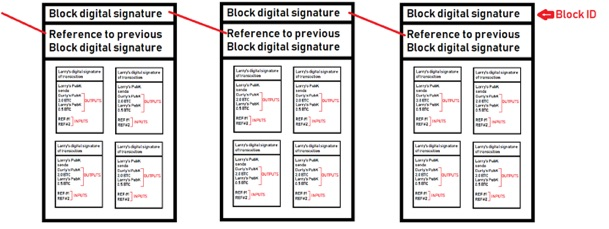
How are new blocks created?
-
•Any node can take a bunch of confirmed transactions in the transaction pool, create a block from them, and broadcast the new block ID to the network.
-
•This happens simultaneously all the time, so the whole network must decide which block gets put next in the block chain.
-
•We achieve this by using a calculation contest that is called solving a block!
-
•Each block contains a link to the previous block, and the transactions in the current block. To solve a block, nodes must run SHA256 hash calculations on this block plus random numbers repeatedly until it is below a certain value.
-
•Remember that hashes are VERY random, so this could take years for one PC - but with the whole world of PCs, it’s about 10 min until someone solves it (this time period is kept static by changing other factors).
-
•The node that solves it first, gets to have their block be the next in the chain.
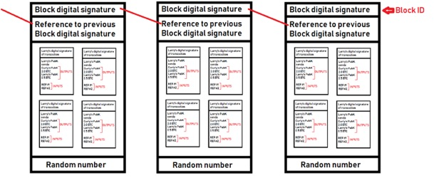
-
•If two different nodes on the Internet solve it at the same time (rare), then both win and a branch is created until the next block is added (which is likely solved by one node). Everyone switches to using that longer branch and branched block that lost goes back into the pool of transactions that will be added to a block later. This is called blockchain stabilization, and is illustrated in the following two figures:
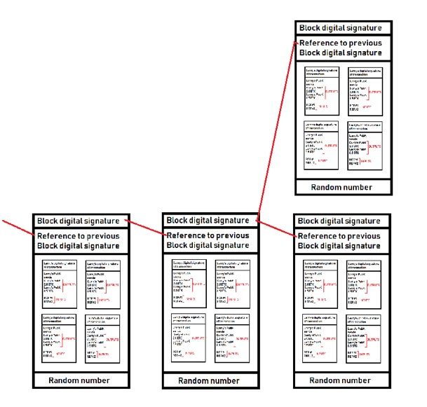
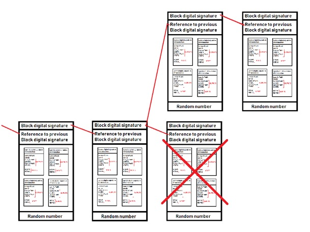
-
•Unfortunately, this branching nature of building upon the blockchain can lead to a double-spend attack! Say for example, you buy a sub at Subway using BTC:
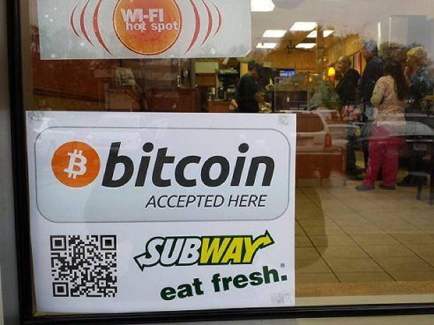
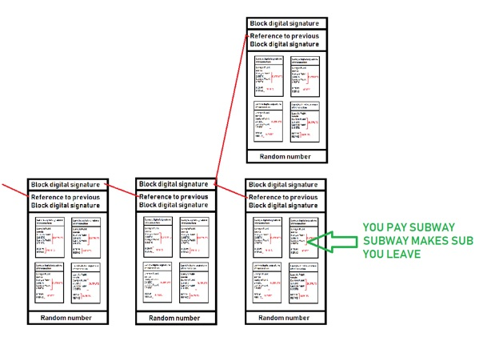
-
•If you were lucky enough, you could also perform another transaction using the same inputs in a remote area of the world that is put into a block that is solved at the exact same time:
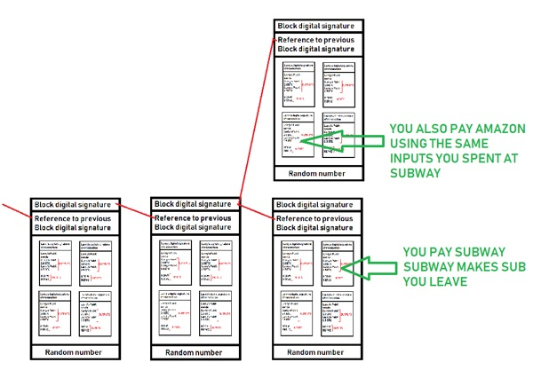
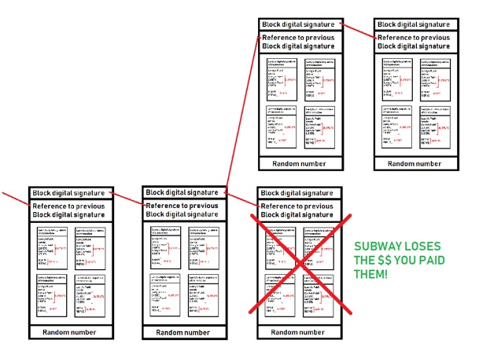
-
•Luckily, double-spending attacks are rare, since you’d have double spend inputs with enough latency, as well as win (solve) two blocks at the same time....which is difficult since you are competing against all the nodes within the blockchain network worldwide!
-
•Moreover, double-spend attacks are only possible near the end of the chain (older transactions are safer).
-
•But what if you had a LOT of computing power? It’s recommended that you wait about 6 blocks (=60 min) after payment before delivering the goods, since it’s unlikely that someone has enough computing power to solve 6 consecutive blocks of simultaneous transactions.
How does $$ get generated in the bitcoin economy?
-
•When you solve a block, you are rewarded with bitcoins! This is called bitcoin mining and it is typically done with specialized ASICs today (luckily video card prices are coming down).
-
•Every 4 years, the block reward is cut in half, and there is a limit: Only 21 million bitcoins can be mined in total, and 16 million are already mined!
-
•By 2140, no more bitcoins will be rewarded, and you’ll only be able to trade goods for bitcoin (no mining). Transaction fees (which are common now due to lower block rewards) will likely be the norm, and sending $$ via bitcoin could involve hefty fees!
-
•Regardless of what bitcoin is worth, you can send down to 0.00000001 BTC in a single transaction (= 1 Satoshi).
-
•You can also join a mining pool to increase the chance of payout (if a node in your pool solves the next block, reward is split among all pool members). Mining pools are a security problem, since more computing power increases the chance of a double-spending attack. The BTC Guild mining group is famous because it was able to solve more than 6 blocks and had to limit their members after the word got out.
Bitcoin vs other cryptocurrencies
-
•Others have different features or improvements compared to the bitcoin model (but since bitcoin was the first, it has the largest following today).
-
•For example, Etherium can be mined forever, quicker/easier transaction confirmation/validation, additional blockchain features, lower transaction fees, and more.
Let’s get back to blockchain:
Remember that cryptocurrency is just the only successful implementation of blockchain, but all blockchain works in a similar manner:
-
•Shared database/ledger of transactions
-
•Each node has a full copy of the database
-
•Updated by consensus (no central control)
-
•For time-stamping, transactions are grouped into linked blocks that form a blockchain (=transaction timeline)
-
•Requires massive processing & storage on all nodes
-
•Relies on a lot of bandwidth
-
•Can sometimes be used to circumvent regulations
Other features of blockchain that aren’t implemented by bitcoin:
-
•Smart contracts are extra conditions that must be met for a transaction to be considered valid (implemented by Etherium cryptocurrency)
-
•Permissions can be used to hide parts of ledger from certain people
How can we do blockchain outside cryptocurrency?
The short answer is nobody really knows yet, but micro blockchains will likely be the most common use case beyond cryptocurrency:
-
•Low # of nodes = less CPU intensive = less traffic = less branching
-
•Example use cases include healthcare, cars, and manufacturing processes (discuss!)
-
•Hybrid model with some centralization is likely going to have to exist to provide insurance (key escrow)
-
•Data accumulators (backup) will likely need to be present as blockchains become deprecated/replaced
A great article from earlier this year that basically identifies how little we actually use blockchain right now is this one: Blockchain in Enterprise: How Companies are Using Blockchain Today (https://goo.gl/jqph51)